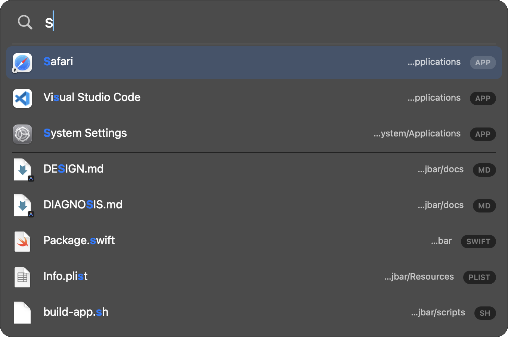

JBar is a keyboard-first launcher for macOS apps and files. It searches a bounded local name/metadata index, ranks for launching, and leaves document-content search to Spotlight. It is currently a source-built development preview while the physical compatibility and notarized-release matrix is completed.

⌥Space → type → Return. Apps group above files; matched characters are highlighted; ⌘Return reveals in Finder, ⌘C copies the path.
Current local release-mode evidence uses one immutable binary, versioned correctness reports, and independent processes. It is development-machine evidence, not a notarized artifact, cross-machine percentile, or advertised SLA.
JBar fuzzy ranking and Spotlight filename-substring metadata gathers are not equivalent workloads. The harness reports each separately and deliberately omits a speedup ratio.
The release harness uses fixed-seed 300k/500k/1M fixtures in three sequential independent processes per size, prints the environment/fingerprint/sample plan, and reports nearest-rank p50/p95/p99/max without best-of-N selection. Every timed response must retain the same complete ordered rows and exact total across matching workloads. An opt-in real crawl uses a temporary isolated snapshot and then runs a semantically different same-root Spotlight reference.
scripts/benchmark-release.sh 100 JBAR_BENCHMARK_INCLUDE_REAL=1 scripts/benchmark-release.sh 100
The current local campaign passed nine synthetic processes from clean candidate
commit 183fc3c2e526e21dccc7976203e5f00ba371426c; its evidence manifest is
7a64cb87…0de6ab. The opt-in real crawl was not part of this run. Publication still requires the
supported OS/CPU matrix, exact signed artifact checksum, and separately stated cache/system load.
Two tools with different jobs. JBar is a launcher that maintains a bounded local index of configured app/file roots; Spotlight is macOS's system metadata and content-search service.
| Dimension | JBar | Spotlight |
|---|---|---|
| Primary job | launch by name/alias | system metadata and content search |
| Benchmark semantics | fuzzy terms + aliases + ranking | filename-substring metadata gathers |
| Ranking for launching | apps-first · acronyms · pinyin · frecency | system-defined |
| Localized app names / pinyin | Finder display name + bundled aliases | system behavior |
| Searches file contents | no — names + metadata | yes |
| Scope | configured readable roots, exclusions, hard cap | macOS-managed scope |
| Interactive dependency | no Spotlight query | Spotlight service |
Full methodology, coverage analysis and the honest limitations: docs/COMPARISON.md.
Not because Spotlight is badly built — because a whole-Mac content index is fragile in ways a launcher can't tolerate.
On 2026-08-19, Spotlight on the development machine could not find a single one
of the 1,101 files in ~/Downloads. An unclean shutdown had caused
macOS to throw away an index that had been silently corrupt since 03:27, and it spent the next two
hours rebuilding 1.77 million records:
Meanwhile 34% of everything it had indexed under the home directory was
node_modules, and mds burned 160–400% CPU for over an hour importing
dependency trees while the user's documents waited in the queue.
That incident motivated a narrower launcher-owned index with explicit exclusions and FSEvents updates. The current formal benchmark covers deterministic synthetic fixtures; a real-corpus run must be repeated from the exact release binary before any refresh-time figure is published. Read the full forensic write-up →
vsc → Visual Studio Code, xc → Xcode. An fzf-style Smith-Waterman scorer with word-boundary and camelCase bonuses, behind a 64-bit character-mask prefilter.
wx, weixin and 微信 can find WeChat. Pinyin aliases (with heteronym overrides) are precomputed for CJK application display/localized names.
Mozilla-style frecency with a 7-day half-life, plus a bounded query-pick boost for the last successful selection from the same normalized query.
Type ~/Dow and press Tab. JBar streams one directory, retains a bounded best-result set, cancels stale scans, and shows PATH · shown/total when results are truncated.
The scrollable result pool is separate from visible rows. Short displays reduce panel height and Page Up/Down stride through the same layout calculation, while overflow remains reachable and visibly indicated.
node_modules, .venv,
conda stores and go/pkg are excluded by default; vendor/, build/,
dist/ and similar trees remain searchable but are de-ranked.
Return opens, ⌘Return reveals, and ⌘C copies. Control/Delete never close the panel; marked text keeps Escape and commands in AppKit's input system. Physical Chinese/Korean/Japanese verification is still a release gate.
JBar waits for LaunchServices' asynchronous result before hiding the panel or recording application history. Failed or missing launches stay unrecorded; richer inline failure feedback is still planned.
The hotkey uses Carbon's
RegisterEventHotKey, so JBar never asks for Accessibility, Input Monitoring or Full
Disk Access — only the standard folder prompts.
Config, filename-metadata snapshot, and frecency history remain local, use bounded reads and owner-only atomic writes, and can be cleared independently. History still contains sensitive paths and query picks.
Requires macOS 13+ and Xcode command-line tools. The current source flow produces an ad-hoc-signed development app, not a notarized public release.
# Build, validate, stage, and install the development app.
git clone https://github.com/linjiw/jbar.git
cd jbar
make install
Press ⌥Space. On your first search macOS asks for protected-folder access as needed by configured roots. Do not strip quarantine from a downloaded build. A Homebrew Cask becomes appropriate only after the exact Universal 2 ZIP is Developer ID signed, notarized/stapled, and clean-machine validated. npm or a language rewrite would not bypass macOS signing, TCC, architecture, or minimum-OS requirements.
Three targets, zero dependencies, system frameworks only.
Hotkey (Carbon) → NSPanel + NSTableView → SearchEngine (actor)
↓ reads
IndexStore ← Indexer: AppScanner · Crawler · FSEvents · Snapshot
Parallel arrays plus UTF-8 name arenas. Paths are reconstructed on demand from a directory table rather than stored per file.
Each item carries a 64-bit character-presence mask; impossible candidates are rejected before the fuzzy scorer runs. A bounded rerank window limits later path/frecency work.
Application scan, full crawl, and incremental updates share the configured item budget. Invalid or oversized generations fail closed instead of being published.
One FSEvents stream covers every root; changed directories are re-listed and the index is rebuilt as an immutable generation and swapped atomically.
Architecture, data model, input behavior, persistence, ranking, evidence, and release boundaries: docs/DESIGN.md.
Spotlight searches file contents. JBar does not. If you need to find a phrase inside a PDF or a Pages document, Spotlight is the right tool — JBar (v1) indexes names and metadata only.
Spotlight also covers a macOS-managed scope; JBar covers readable roots you configure after exclusions, depth, and a shared item cap. A bounded top-K can omit one of many duplicate filenames even when it is indexed.
Automated marked-text/layout regressions, a packaged synthetic AppKit event smoke, and a Universal 2 build with native arm64/Rosetta CLI checks are useful evidence. They do not prove a physical IME, native Intel, macOS 13 runtime, LaunchServices, or release trust. Physical Sequoia Chinese input, the remaining OS/language/layout matrix, native Intel runtime, and the Developer ID notarized/stapled/Gatekeeper artifact remain pending. See the support policy and executable UX matrix.